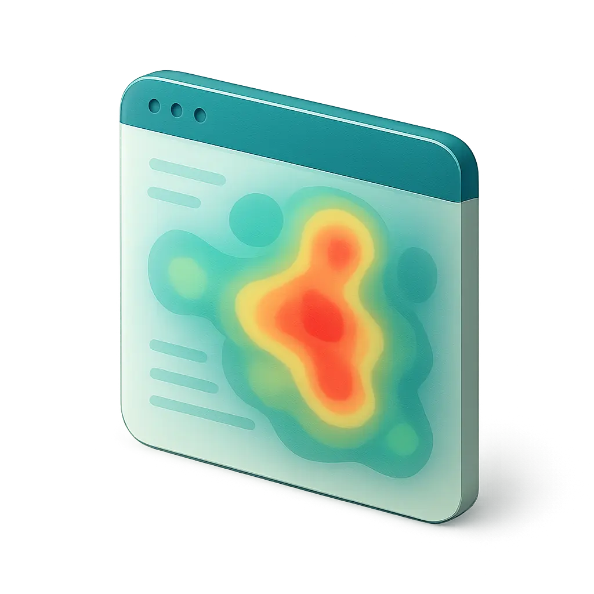
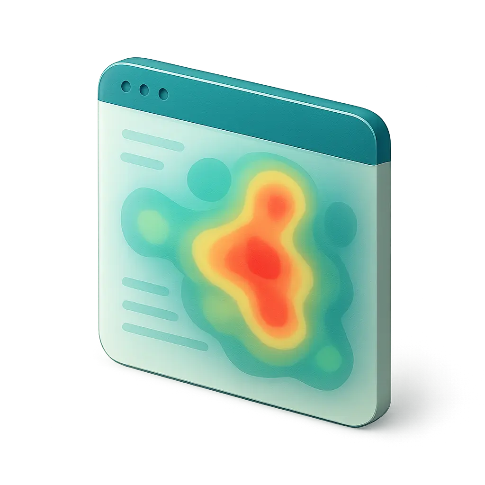

Marian Kadlec
Senior digital designer for ambitious brands and digital products.

 

With 15+ years of experience in digital design, I bring a unique combination of strategic thinking, technical expertise, and creative vision to every project.
Funnily enough, I often ended up working on redesigns of products and brands.